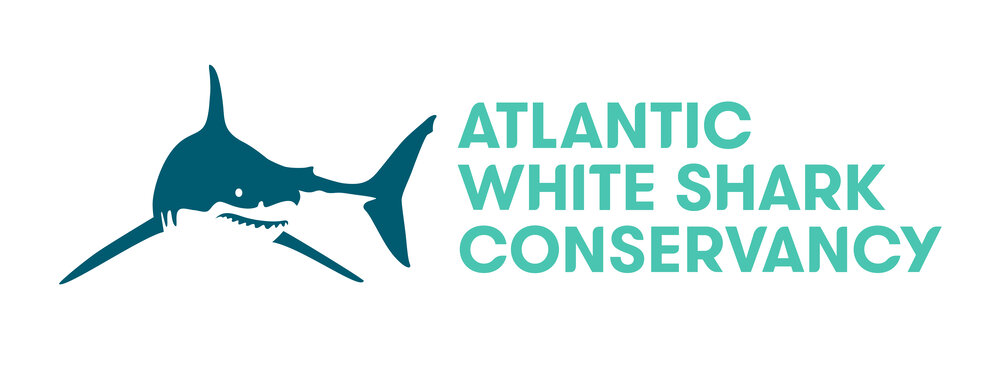
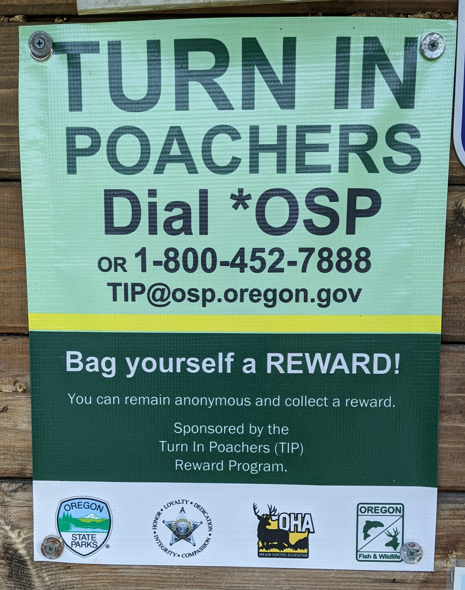

Communication Technology Reshaping Environmental Institutions
Matt Ziegler — Final Exam, December 2022
Problematizing Communication Tech
& Environmental Institutions
| 1. | Wildlife conservancy outreach via basic phones |
| 2. | Environmental communication via wildlife maps |
| 3. | Anti-poaching hotlines |
| 4. | Cross-section of environmental orgs |
Problematizing Communication Tech
& Environmental Institutions
| 1. | Wildlife conservancy outreach via basic phones |
| 2. | Environmental communication via wildlife maps |
| 3. | Anti-poaching hotlines |
| 4. | Cross-section of environmental orgs |
Design probe 1:
Wildlife Conservancy Community Outreach
★ Best paper at COMPASS 2020 ★
Study
Mobile phones & community relations
- Community focus groups
- Staff interviews
- Technology pilots
Results:
Intensive staff phone use
“People call us asking the same questions over and over again. We answer a thousand calls about the simplest thing.“— Staff
“We call the veterinarian who does artificial insemination, and he gives us the updates.”— Community member
Communication Nuances
-
Relationship building
“If people don’t see us regularly, they'll think we have abandoned them. People need to see that we're concerned with their welfare, not that we just come when we want something.”
— Staff -
Expectation management
“You have to be so so careful about managing expectations. You say something, people understand the wrong thing, and expect something else. You can get really screwed up. ”
— Staff - Misinformation
Pilot: SMS hotline
Example messagesDear ol pejeta consaverncy am a community member but ai whant inform you if it is an any varncy just inform ifen a fance ripear and security patrol thanks
10 Erephants ware patroling kijabe thd whole night pls.
Goodafternoon am a resindent of [redacted] and am borthed by a sheep diseases that afect lamps coursing small woulds aroud mouth.
My Name is [redacted] am farming nearest to u here on the river whow can u helpers from these monkey theru inaharimbu everything in the shamba
Am a guardian from [redacted] and my sister achieved 332 marks how can I get a scholarship form?
Pilot: SMS hotline
1 year: 344 messages from 170 users

USSD Pilot
Ol Pejeta Community USSD


1 month: 850 calls from 256 users


Problematizing Communication Tech
& Environmental Institutions
| 1. | Wildlife conservancy outreach via basic phones |
Problem spaces
- How do mobile phones shape rural conservancies' community relations?
- How can technology improvements help?
- Challenges:
- Potential for miscommunication
- Accessibility
- Security
- Institutional capacity
Problematizing Communication Tech
& Environmental Institutions
| 1. | Wildlife conservancy outreach via basic phones |
| 2. | Environmental communication via wildlife maps |
| 3. | Anti-poaching hotlines |
| 4. | Cross-section of environmental orgs |
Design probe 2: Wildlife tracking maps and environmental communication
★ Honorable mention at COMPASS 2021 ★
Animal-tracking map designs
© OCEARCH
© OCEARCH
© Wild Capuchin Foundation
© MOTUS
© WWF
© Polar Bears International
Environmental Comms. Best Practices
- Emotions: cultivate hope, avoid anxiety
- Conversations towards collective action
- Continuous awareness
- Relationships with audience
- Avoid controversy to broaden participation
- Relatability: tell local stories, focus on people
Goal:
match with interactive data
visualization strengths
visualization strengths
Study
- Design & build map toolkit
- Focus groups with environmental organizations
- User experience study

Audience segments
General public
- Big learning curve: interface + data interpretation
- Hurdle for short attention spans
Existing dedicated audiences
- Highly-motivated users can take advantages of interactive affordances: freely exploring, drilling down to details, testing own hypothesis
They just love giraffe, they love reading anything we do... and they would love seeing something like this.
Results: Data Interpretation
- Participants struggled to find meaning in the GPS data
© OCEARCHMany noted the animals' vast travel distances......but not much else.
- Contextual information was not well-integrated
I guess what I got out of it, I think I could have also gotten out of a PowerPoint... I don't think that the actual geospatial component was integrated into the other component.
Results: Relatability
- Conservationists want users to empathize with the maps's animals:
...just allowing people to get to know these sharks as as individuals. You know, relating to them as animals that have a tough life, that struggle. We have a lot of white sharks that have been hit by boats.... People don’t tend to think of these animals that way a lot of times.
- But users felt more connected through the pictures and videos than the data
Results: User takeaways
-
Learning: about both the animals and research
I learned a lot about how tracking animals works... I saw that you get a ping when they come to the surface and data is transferred!?
-
Emotions: some claimed no emotional response, some happy to see the conservation work:
It's nice to know with the WWF that they're doing a lot of work around the world... so that's a little bit of optimism.
- Actions: most didn't know what actions to take; some wanted to learn more
Deployments:
Save The Elephants – WildTracks
Problematizing Communication Tech
& Environmental Institutions
| 2. | Environmental communication via wildlife maps |
Problem spaces
- How are the Internet, social media, and interactive applications shaping environmental organizations' public engagement?
- How are interactive data visualizations suited for environmental communication goals?
- Positive emotions
- Continuous awareness
- Building relationships
- Conversations towards collective action
- Broadening participation
- Relatability
Problematizing Communication Tech
& Environmental Institutions
| 1. | Wildlife conservancy outreach via basic phones |
| 2. | Environmental communication via wildlife maps |
| 3. | Anti-poaching hotlines |
| 4. | Cross-section of environmental orgs |
Anti-poaching hotlines
Few evaluations; mixed success
Case study:
Security hotline at Ol Pejeta?
- User-centered design study
- Staff interviews
- OPC intelligence team
- Kenya Police Reserve
- Community development project
- Wildlife department
- Community focus group
Security @ Ol Pejeta
Ivory poaching
Bushmeat poaching
Community crime: theft and harassment
Paradoxes, tensions, tradeoffs
- Community motivations vs. OPC motivations
- Information quantity vs. quality
- Protecting informants vs. limiting usefulness
- Relationship building vs. secrecy & discretion
- Collaboration vs. checks & balances
Community motivations vs. OPC motivations
- Fundamentally, conservancy prioritizes wildlife
- OPC provides some security to communities:
“They create a sense of security so now we can sleep at night””
— Community focus group - Some genuinely want to protect nature
- Belief that poachers commit other crimes:
“Poaching negatively affects security because poachers are also criminals; because the same people who are poachers are likely to be stealing.”
— Community focus group
Information quantity vs. quality
- Communities are not involved in ivory poaching
Sophisticated operations • International syndicates • Inside jobs - Investigations are slow and resource-intensive:
“When you have a lead, you need to slowly piece together information from many sources: where someone lives, what cars they drive. You talk to ten people and don’t get any information; and then someone will tell you there is someone called James but they don’t know the last name. So then you ask for characteristics, is he short or tall and such. But still, there are a lot of James in a village. So then later you maybe hear from someone else that there is a guy named James Mwangi... Then it takes months to follow someone and learn who they really are”
— Intelligence staff - Fear of bogus hotline reports
- Prefer to rely on trusted informers
Protecting informants vs. limiting usefulness
- Community wanted anonymity, fearing retaliation:
“Years ago I reported some people cutting firewood. But then the rangers they sent were friends with the people cutting, and I got into some trouble”
— Community focus group - Staff wanted to know identities, fearing counterintelligence
- Confidentiality: access control is critical
Technical design


- Prioritize responsiveness & quick reactions
- Some unexpected security perceptions:
“I would never say anything private over WhatsApp! It’s not confidential. Everybody will see it... messages get delivered a million times.”
— Community focus group - Providing anonymity is very difficult
- Confusion between different communication channels
- Confidentiality is key
Problematizing Communication Tech
& Environmental Institutions
| 3. | Anti-poaching hotlines |
Problem spaces
- User-centered design for anti-poaching hotlines:
- Important considerations for each stakeholder?
- Technology design factors?
- Are anti-poaching hotlines appropriate everywhere?
- What about Ol Pejeta Conservancy?
Problematizing Communication Tech
& Environmental Institutions
| 1. | Wildlife conservancy outreach via basic phones |
| 2. | Environmental communication via wildlife maps |
| 3. | Anti-poaching hotlines |
| 4. | Cross-section of environmental orgs |
How do these ideas generalize to other environmental organizations?
Cross-sectional interviews
- Inclusion criteria:
- Work at an environmental instition
- Interact with communities
- 90-minute Zoom interviews, semi-structured
- Interview questions informed by prior case-studies
22 Participants
- Countries: 14 India6 Uganda2 USA
- Sectors:
5 Government14 NGO3 Park3 Academia
- Many project types:
AgricultureAnimal RescueForestryEnvironmental educationHealthAlternative livelihoodsAnti-poachingActivismWater & sanitationEcotourismWildlife conservation
- Large, medium, and small organizations
Process-outcomes analysis
Variations in community technology access
→
Environmental organizations' technology use with communities
↗
Operations and institutional structures
→
Project types
↘
Community relations and social dynamics
Cross-sectional interviews
Remote
- Very limited technology access
- Relaying messages
- Orgs liasing with government
Peri-rural
- High phone access
- Mixed/medium Internet access
- Project coordination across many sites
- Data collection & accountability
Urban
- High phone & Internet access
- Mass comms & advertising
- Some shallow interactions
- Some lively group conversations
Cross-sectional interviews
Technology's impact on social factors
- Trust → start relationships in person, keep in touch, credibility, intimidation
- Inclusion → no positive or negative effect; reflected existing inequities
- Formalization → more structured interactions, top-down control, hard to get rich information
Problematizing Communication Tech
& Environmental Institutions
| 4. | Cross-section of environmental orgs |
Problem spaces
- How can environmental organizations think more strategically about their technology use with communities?
- Unintended consequences?
- How should organizations plan for future technology changes?
Problematizing Communication Tech
& Environmental Institutions
| 1. | Wildlife conservancy outreach via basic phones |
| 2. | Environmental communication via wildlife maps |
| 3. | Anti-poaching hotlines |
| 4. | Cross-section of environmental orgs |
Thanks!
Extra Slides


Environmental CS Genres
Research & monitoring
- Sensing
- Modeling
- Decision support
- Biodiversity informatics
- Anti-poaching
Energy
- Efficient computing
- Renewables
- Business / institutional efficiency
Agriculture
- Extension / education
- Sensing applications
- Permaculture planning
Urbanism
- Smart cities / buildings
- Pollution monitoring
- Transit
- Urban planning
Individual behavior change
- Ambient awareness
- Self-tracking
Governance / Collective change
- E-governance
- Community sensing
- Participatory mapping
- Social media
ICTD
Theory • Methodology • Technology Affordances
-
Semi-automated SMS Nurse Hotline
Perrier et. al. 2015
-
User-moderated interactive voice forums
Vashistha et. al. 2015
-
Participatory Video for Agriculture Extension
Gandhi et. al. 2015
-
Semi-automated SMS Nurse Hotline
Perrier et. al. 2015 - User-moderated interactive voice forums Vashistha et. al. 2015
-
Participatory Video for Agriculture Extension
Gandhi et. al. 2015
Can basic phone services...
- ...improve service delivery?
- ...build relationships?
- Feedback
- Credible information
- Improving reach
- Accountability
What did we learn?
Toolkit design/build • Conservationist interviews • User study
- Data is not relatable — Integration with other media is key
- Continuously engage dedicated audiences with updates
- Show off organization's work — Inspire optimism
- Attract casual audiences to other communication channels
- Details & recommendations in paper